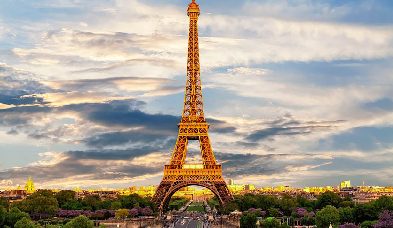
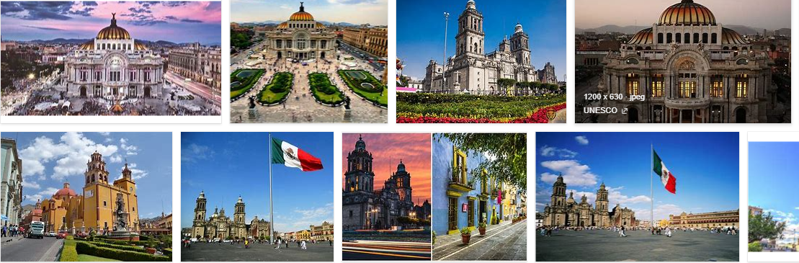
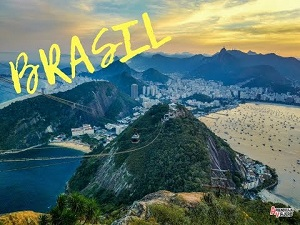
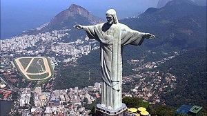
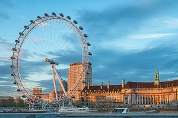

Roma es con toda seguridad una de las ciudades más bonitas de Europa. ... Además es la ciudad con la más alta concentración de bienes históricos y arquitectónicos del planeta; su centro histórico es la mayor expresión del patrimonio histórico, artístico y cultural del mundo occidental europeo.
FRANCIA

Francia es un país de Europa que goza de gran popularidad como destino turístico, tiene entre sus ciudades grandes atracciones, siendo París, además de su ciudad capital, uno de los lugares más visitados.
Francia se caracteriza por la oferta turística que presenta, la cual se enfoca en el arte, la historia y la gastronomía que mezclado con las distintas manifestaciones forman un conjunto de experiencias interesantes e inolvidables para el turista.
MEXICO

La diversidad y contraste de una ciudad moderna con su interminable cultura y zonas antiguas. Museos, galerías, edificios históricos. La gastronomía, ya sea desde los antojitos callejeros hasta los restaurantes de primer nivel. Las actividades para realizar en familia.
BRASIL


Tierra de belleza arrolladora, de alegría, colores, de ganas de música, fiesta y bailoteo. País de contrastes, de junglas de acero y selvas inexploradas, de favelas y rascacielos, de olas salvajes y cascos históricos donde pasear es puro placer, de picanha y caipirinha, de verde, azul y amarillo.
LONDRES

Londres es la capital del Reino Unido, la ciudad cuenta con un aire de grandeza, pues es uno de los centros financieros más importantes de Europa, eso sin contar con ser el hogar de una de las familias aristocráticas más importantes del mundo, no por su poder sino por su popularidad.
"ADENTRATE CON LAS MARAVILLAS DEL MUNDO"
has pensado! no tengo dinero pero quiero conocer otros lugares, como le hare?